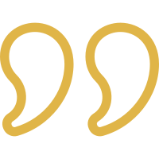

לפעמים כדי להגיע להישגים בחיים,
כל מה שנדרש זה לשנות את חוקי המשחק.
גם אתם יכולים להשתנות, להעצים ולהשביח את יכולות החשיבה וההתנהלות שלכם.

לפני שפגשתי את אורנת לא חייתי את החיים, שרדתי אותם.
מאז שפגשתי את אורנת, התחלתי להסתכל קדימה ולצמוח.
(אלעד)
ד״ר אורנת לב-ער
שמי אורנת לב-ער ואני מלווה תהליכי שינוי והעצמה אישית ומקצועית ומרצה ללימודי תרבות באוניברסיטת בן-גוריון בנגב ובמרכז הבינתחומי בהרצליה.
קורות חיי משקפים את ניסיוני ואת היכולות שלי ליצירת יכולת ושינוי אצל הזולת תוך כדי שימוש בדרכי פעולה ומחשבה יצירתיים. היות שחייתי עם משפחתי בשלוש יבשות, נחשפתי לשפות ולתרבויות שונות, בניתי יחסים עם מקומיים ועם זרים במערך חברתי וכלכלי משתנה. התפקידים שמילאתי דרשו רגישות, הקשבה וניתוח של מצבים לא צפויים ומאתגרים. יזמתי, הקמתי וניהלתי פרויקטים בתחום השיווק, ומאז סוף שנות התשעים אני מנהלת קריירה אקדמית. עבודת הדוקטורט שלי בתולדות האומנות (PhD), עוסקת בכלי נגינה וספרים בציור בארוק איטלקי.
בחמש-עשרה השנים האחרונות אני מנהלת בהתנדבות פרויקט ייחודי בשם 'מלגה להצלחה', המיועד לאנשים צעירים מרקע מוחלש. במסגרת הפרויקט אני מלווה אותם במסע שמטרתו העצמה אישית, שיפור כישורי חיים, בחירת תחום לימודים, בחירת מקצוע ועוד. הידע והניסיון שלי נובעים ממאות 'מסעות' קצרים וארוכים שעברתי יחד עם בני נוער ומבוגרים, אשר ביקשו לעצמם חיים משמעותיים ומספקים יותר. התהליכים שהם עברו שינו את חייהם והעניקו לי תחושת משמעות ושליחות אישית.
כדי להעמיק את הידע ואת הניסיון שצברתי במהלך השנים, רכשתי גם כלים לאימון ברוח שיטת פוירשטיין . נוסף על כך, אני נעזרת בכלים מתוך שיטת VTS (Visual Thinking Strategies) – טכניקה "פוקחת עיניים" תרתי משמע.
שבילי חיים נרקמים ונפרמים לאורכו של כל מסע. אין שני אנשים דומים. לכל אדם דרך משלו על פי מידותיו וצרכיו. אני כאן כדי שנתכנן ונפעל יחד וביצירתיות לשנות ולשפר את חוקי המשחק שלך ועבורך.
? אילו יכולות תוכלו לשפר בתהליך איתי
"חלום לא הופך למציאות באמצעות קסמים.
הוא דורש זיעה, נחישות ועבודה קשה"
(קולין פאוול)
השיעורים עם אורנת עזרו לי לחשוב שונה, להסתכל על הדברים בצורה אחרת ובעיקר לתעל את הדרך והתוצאה של מה שאני עושה.
את תרגילי החשיבה והמפגשים שלנו אורנת התאימה במיוחד בשבילי; היא הבינה איפה אני יותר חלשה ויכולה להתחזק.
ביום-יום שלי שמתי לב שאני מבצעת פעולות וחושבת בצורה הרבה יותר אפקטיבית.
המפגשים עם אורנת היו לא רק מלמדים אלא גם מהנים. קבלתי יחס אישי והייתה לי תחושה שחשוב לה שאני ארגיש את השינוי והתהליך.
אני ממליצה על התהליך הזה. אני מאמינה שהוא יכול לעזור לכל אחד להשתפר.
אני בת 23. הגעתי אל אורנת על מנת לשפר ולייעל את יכולות הלמידה שלי לאחר שבמשך שנים התמודדתי עם בעיות קשב וריכוז שהקשו עלי מאד להתמקד בלימודים.
כאשר אורנת הציגה בפניי את אימון ההעשרה האינסטרומנטלית, עולם חדש נגלה בפני.
ראשית, הגדרנו יחד את הקשיים שלי ולאחר מכן הצבנו מטרות.
במהלך העבודה המשותפת התגלו חוזקות וקשיים שלא הבחנתי בהם קודם ולכן לא ידעתי להגדיר אותם. ככל שהעמקנו בתהליך, הרגשתי כי העבודה המשותפת מחזקת ומשקמת את דפוסי החשיבה שמועילים לי ללמידה נכונה, כמו תשומת לב לפרטים, גמישות מחשבתית ומיקוד ובו בזמן גם מציפה את דרכי החשיבה הלקויים שמפריעים לי ומעניקה לי כלים לתקן ולשנות. השינוי היה מדהים והרגשתי בו כבר במפגשים הראשונים. הליווי האישי והמקצועי שקיבלתי, גרם לי להרגיש בטוחה לעשות את השינוי.
אורנת יודעת למצוא פתרונות יצירתיים ליציאה מתוך סיטואציות משבריות שנראות כמו פלונטר. למצא חוזקות ולהגביר אותן, מתוך קשב ודיאלוג. קודם כל, היא ידעה להסביר ולנצח איתי את זה כך שתמיד הייתי יוצא בראש מורם. לתת פרופורציות. אחר כך, היא ידעה לבנות איתי תכנית ברורה, תוך כדי שיחה, לארגן זמן וחיבורים.